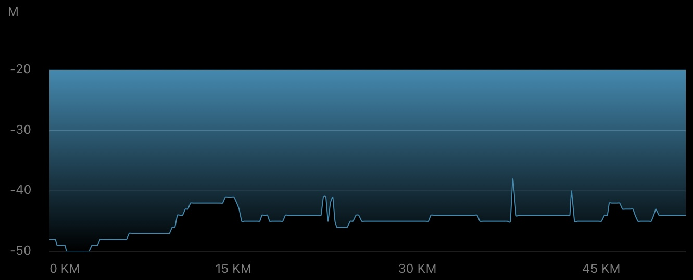
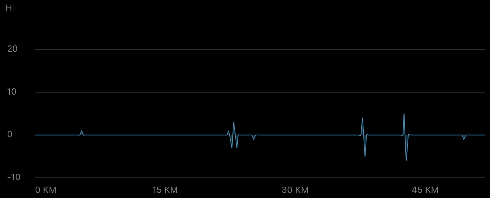
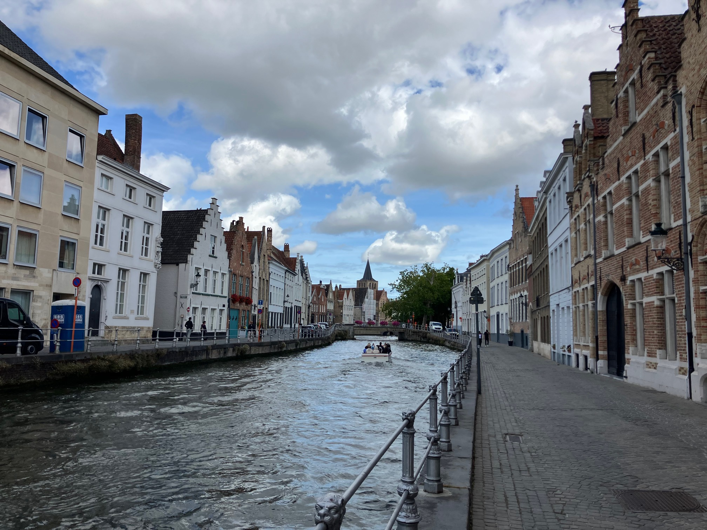
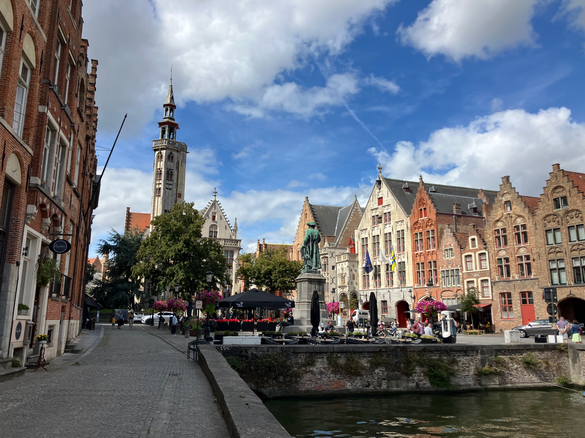
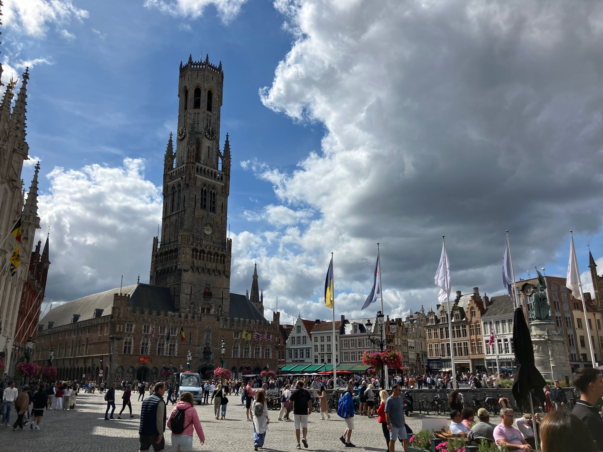
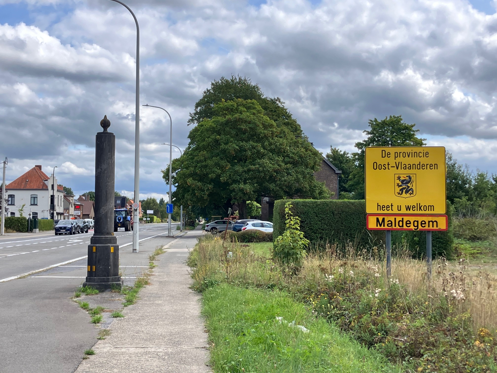
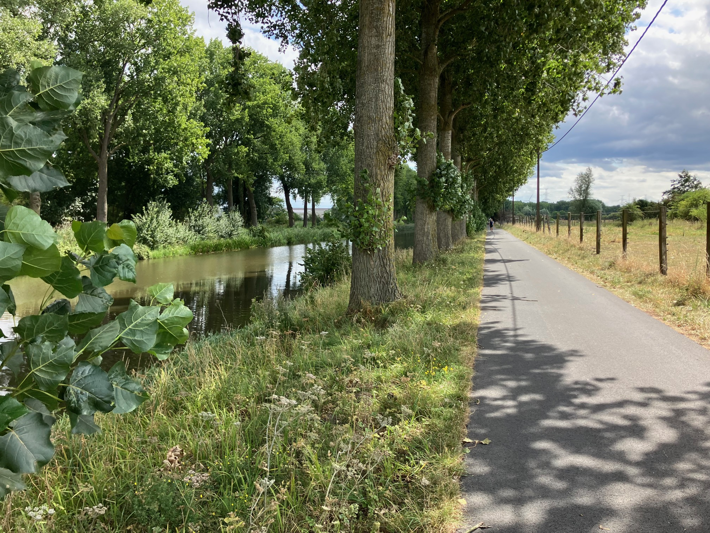
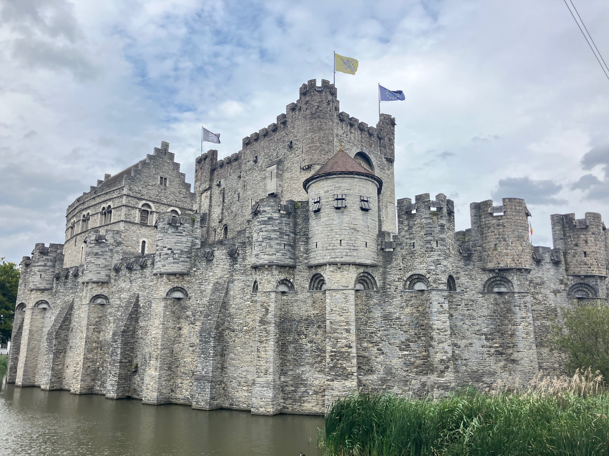
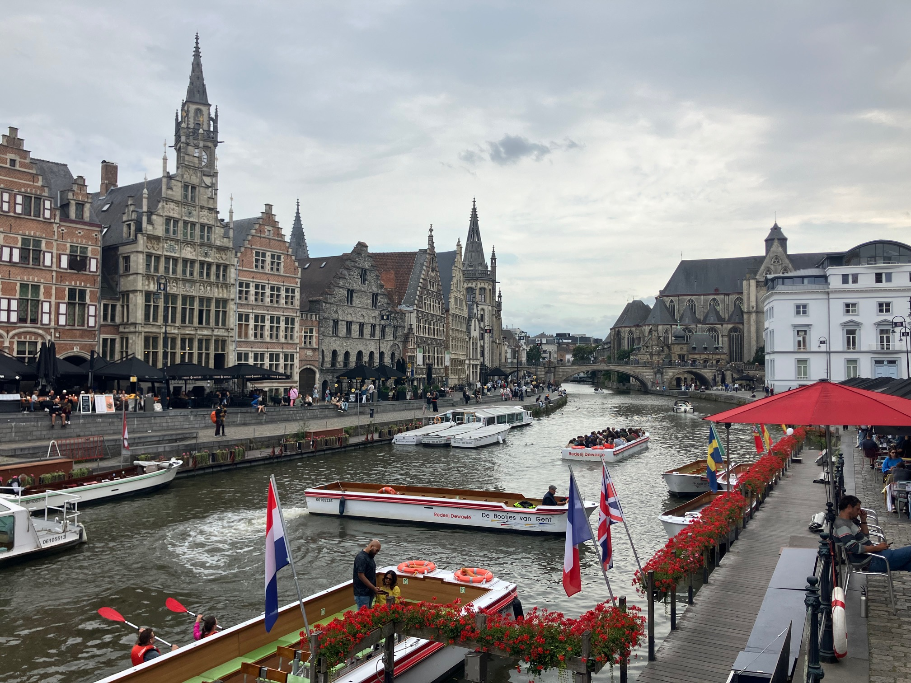
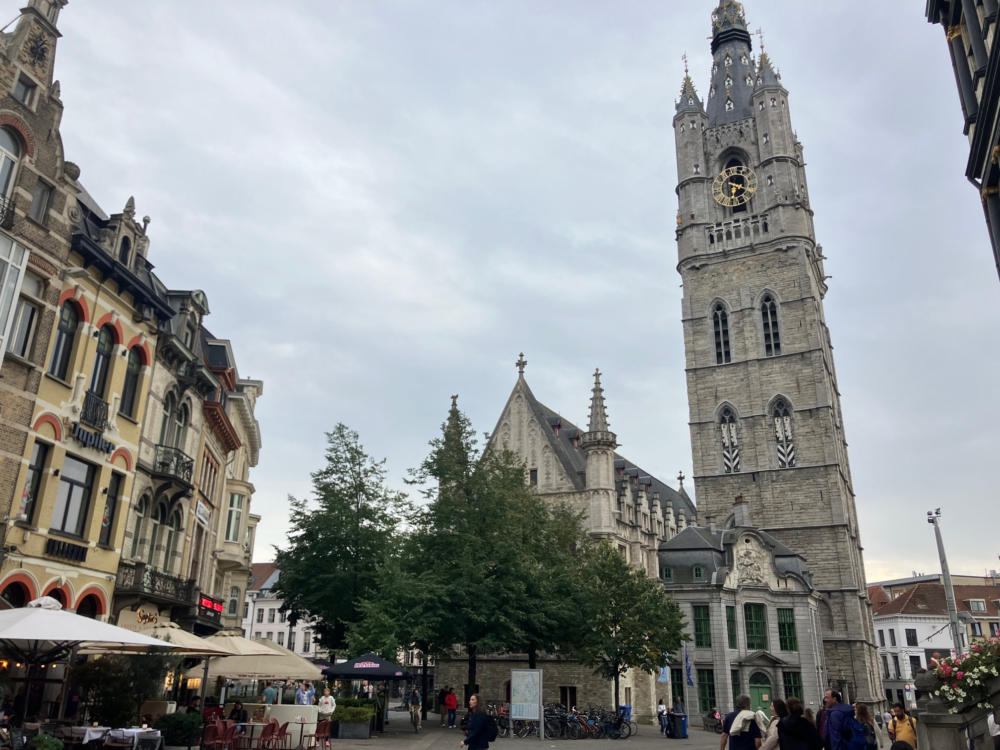

Daily Stats*
| Distance |
51.94 km |
| Time |
2:28:33 h |
| Avg. Speed |
21.0 km/h |
| Max. Speed |
32.6 km/h |
| Avg. Heart Rate |
111 bpm |
| Uphill |
74 m |
| Downhill |
69 m |
| Avg. Temperature** |
21.0 °C |

Elevation profile [m]

Slope profile [%]
*measured by Garmin Forerunner 945 & Sigma ROX 4.0
**measured at the lower back
Daybook
Today's post will be broken down into three parts. I'll start by sharing my impressions of Bruges, which I had the opportunity to explore over the past day and a half, and then I will provide the regular route description. Finally, I'll touch on the little walk I took through Ghent this evening, as I'm already moving on tomorrow ;-)
Bruges is actually quite a small city; at least the medieval city center (which was declared a World Heritage Site by UNESCO in 2000) can be crossed on foot in about 30 minutes. Architecturally, this area of the “Venice of the North” is extremely fascinating, thanks to a melange of old, winding, cobblestone streets, the Reien (canals of the city from the Reie) crossable by larger and smaller bridges, and the historic, picturesque houses. It's easy to see why Bruges is such a historic city (it was even European Capital of Culture in 2002), and I would definitely recommend it for a weekend trip! But be prepared that you will not be the only tourists there.
There is relatively little to say about the cycle route between Bruges and Ghent. At the time of my departure, the sky above Bruges was overcast, with the sun peeking through from time to time and a pleasant temperature of just over 20°C. Considering the total distance of about 50 km, today's strategic approach was focused on a swift yet regenerative lowland ride — finishing quickly without pushing too hard! This turned out to be easy to achieve: the first 45 minutes out of Bruges, I rode along the N9 to Maldegem (with the exception of a short detour through Sijsele). Here, the biggest obstacles were the ruts in the road that appeared about every 3 meters, crossing traffic, and feces ... well, screw it. After passing through Maldegem, briefly returning to the N9, and bending to the right a little later (note to myself: do not go straight over the bridge!), I already found myself at a branch canal of the Leie, which would take me past Eeklo to Zomergem. There I turned left and, still cruising at a comfortable average speed of around 25 km/h, cycled via Lovendegem and Vinderhoute to finally arrive in Ghent from the northwest. Sometimes the parts of the route within a city are the toughest, because the routing and traffic are more “chaotic”, but the city of Ghent has solved this elegantly with dedicated bike lanes, so the remaining kilometers to the Sint-Amandsberg quarter in the northeast were also easy to complete. In retrospect, I found the route almost “boring” because it felt like I only turned three times :-)
The exploratory walk through Ghent that followed was far less “boring.” From my accommodation, it took me about 45 minutes to reach the heart of the city and my first destination, Gravensteen, a medieval castle surrounded by canals. It quickly became apparent that Ghent is a size larger than Bruges, with a “wider” architecture. However, one parallel can be found in how the city is crisscrossed by river branches, which I personally like very much! From Gravensteen, I walked on toward the quays, the Korenlei and the Graslei on the opposite side, and I noticed the many pretty-looking cafés, some of them even right on the water's edge. I crossed the Sint-Michielsbrug to the other side of the river and checked out the remaining highlights there: Het Belfort van Gent (Belfry Tower of Ghent), Sint-Baafskathedraal (St. Bavo Cathedral), and the Stadhuis (City Hall). These are truly impressive buildings, and it never ceases to amaze me what was built hundreds of years ago! My conclusion about Ghent: much more urban than Bruges, at least as many tourists, but also many historical elements and shopping streets with attractive shops.
These impressions conclude the tenth post on the tenth leg of this tour. We are getting close to the 1,000 km milestone and will reach it tomorrow on the way to Brussels. Today was pretty relaxed, so hopefully tomorrow will be another good day :-)
Impressions

House fronts to the right of the Konungsbrug in Bruges

Small square in Bruges with the statue of Jan van Eyckplein and Burgher's Lodge in the background

Grote Markt in Bruges with the Belfry tower — a UNESCO world heritage site

Entering the province of Oost-Vlaanderen near Maldegem

Flat route along a branch canal of the Leie

Medieval Gravensteen ("Castle of the Counts") in Ghent

Korenlei and Graslei in Ghent with a view of the Sint-Michielsbrug in the background

Belfry tower in Ghent — another UNESCO world heritage site